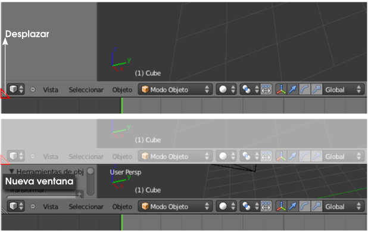
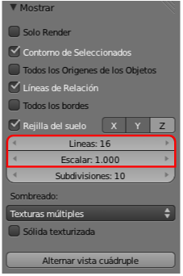
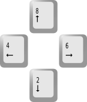
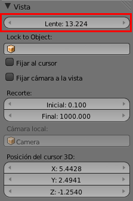
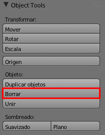
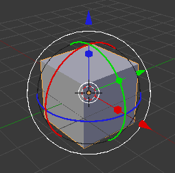

Actividades
1- Genera nuevas ventanas.
Prueba a desplazar el ratón por el símbolo triangular que aparece en algunas esquinas de los editores. Verás que las ventanas se parten en dos. No es fácil el proceso inverso (eliminar una de esas ventanas nuevas que hemos creado) aunque en realidad sólo hay que hacer el movimiento inverso, pero con un poco de práctica se gana destreza.
2- Echa un vistazo a los distintos entornos de trabajo
Detente un rato a ver las diferentes configuraciones de ventanas que ofrece Blender además de Default:
- Animation. Para tener a la vista todo lo necesario para animaciones.
- Compositing. Blender incluye un sistema avanzado para controlar efectos llamado Edición por Nodos que responde a los últimos avances en lo que a manipulación de imágenes se refiere. Se trata de disponer de un modo independiente de cada efecto que apliquemos y no con el tradicional Historial cronológico.
- Game Logic. Blender permite la creación de videojuegos y desde aquí podemos acceder a todo lo necesario para diseñarlos.
- Scripting. Si tenemos nociones de programación en Python desde aquí podemos escribir y ejecutar nuestras propias aplicaciones dentro de Blender.
- UV Editing. Es muy habitual pegar texturas fotográficas sobre los modelados y ese proceso se controla a la perfección desde aquí.
- Video Editing. La edición final del vídeo de una animación con diferentes secuencias, sonidos, efectos... se hace desde este entorno de trabajo.
3- Edita la rejilla
Busca en el cuadro Propiedades ("N") la botonera Mostrar, despliégala con el pequeño triángulo y cambia los parámetros Líneas y Escalar de la rejilla que hace las veces de plano horizontal del suelo.
4- Prueba a tener cuatro editores Vista 3D
En esa misma botonera Mostrar de la actividad anterior investiga la opción Alternar Vista Cuadruple. Ese mismo efecto lo conseguimos con el atajo de teclado "Control _Alt _Q".
5- Haz órbita y zoom a través de teclado
Investiga las posibilidades que ofrecen las teclas "NumPad 2", "NumPad 4", "NumPad 6" y "NumPad 8".
Haz lo mismo con el signo de suma y de resta del teclado numérico para ver sus posibilidades de zoom.
6- Configura una distancia focal para Vista 3D
En el cuadro Propiedades ("N") investiga las consecuencias de manipular el parámetro Lente en la botonera Vista.
7- Borra desde el cuadro Herramientas
En el cuadro Herramientas ("T") verifica una sencilla edición: Borrar.
8- Siente el desplazaiento super-lento
Desplaza un objeto mientras pulsas"Shift" y comprueba cómo se hace un desplazamiento super-lento para tener mayor control.
9- Gira y rota el globo terráqueo
En una esfera (Añadir/Malla/Esfera UV) haz una rotación con valor 23.27 (ángulo de inclinación de la Tierra) en el eje X con "RX23.27" y después haz que gire sobre su eje con "RZZ".
10- Manipulador 3D sin sentido práctico
Acumula manipuladores con la tecla "Shift" pulsada. Comprobarás que no es nada recomendable. Este sería un cubo con los tres manipuladores a la vez, lo que demuestra que una ayuda puede acabar convirtiéndose en auténtico caos si no se usa con criterio.
11- Practica asuntos relativos al render
- Realiza diferentes renders cambiando sus proporciones y tamaños.
- Varía el % de salida de un mismo render para comprobar cómo aumenta o disminuye el tamaño de salida.
- Acostúmbrate al explorador de archivos para determinar el destino de un render.
- Cambia el formato de salida tal y como aprendiste en el apartado Renderizado y guarda el mismo render en formatos distintos como PNG, JPEG o BMP.
12- Cambia colores en distintos modos
Manipula el color de un material desde los distintos modos que ofrece Blender: RGB, HSV y Hexadecimal cuando estás en el editor de color.